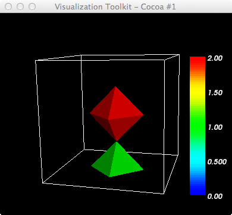
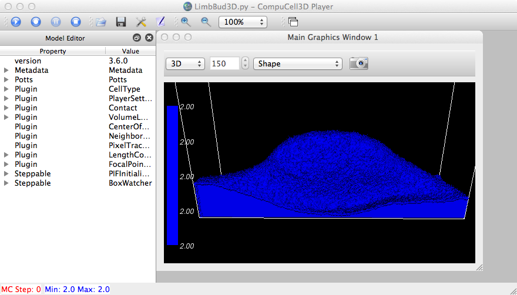
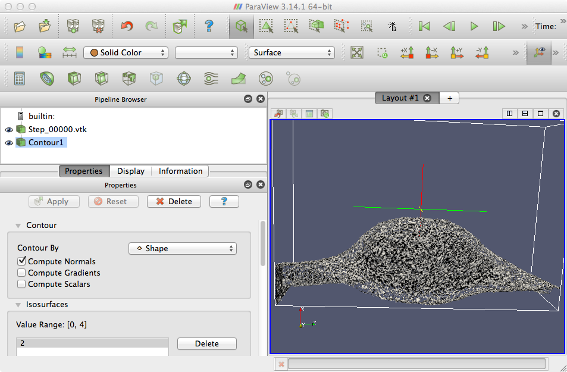
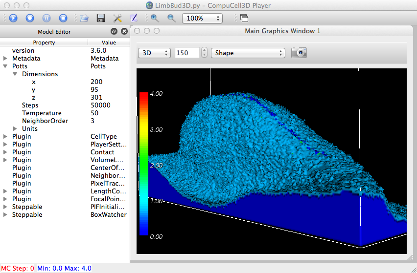
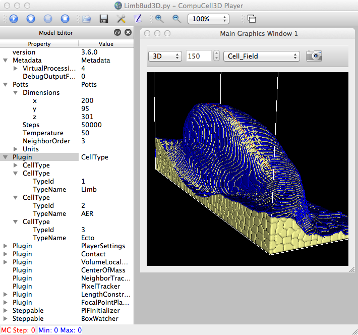
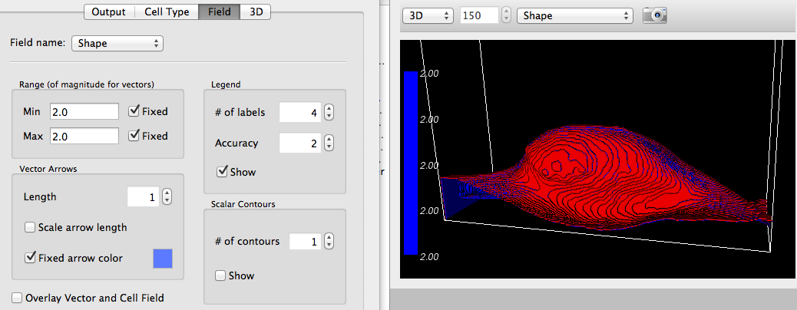
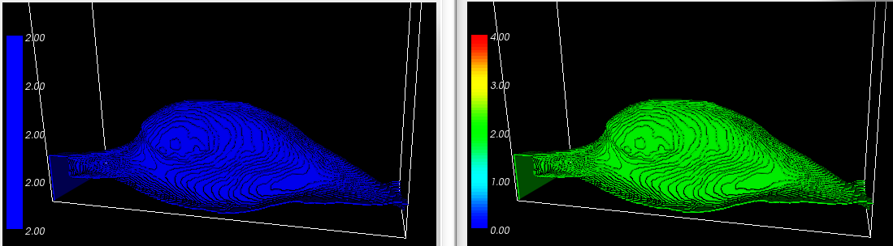
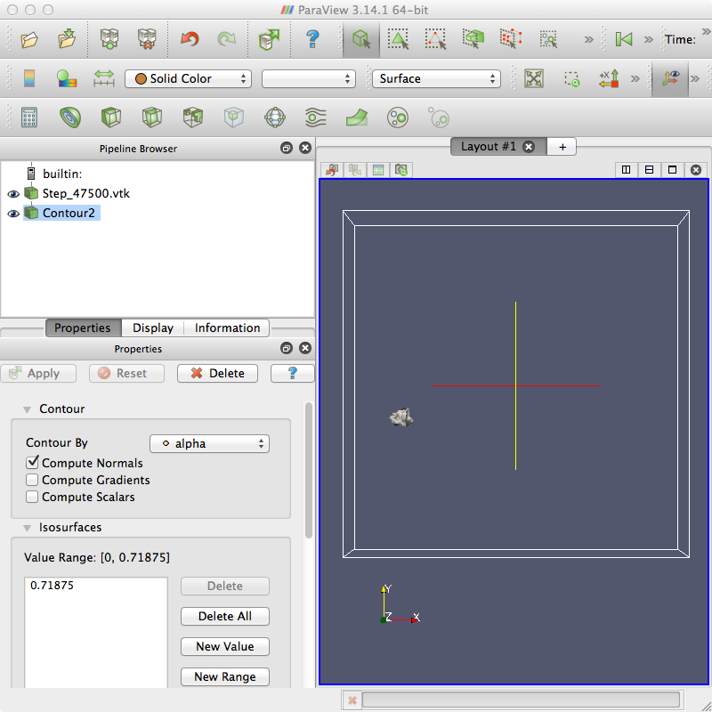

Let's take a look at a simpler test case than was presented at Vtk_contours_3D.
~/dev/vtk-stuff$ ty f_3x3x3.vtk # vtk DataFile Version 3.0 3D data ASCII DATASET STRUCTURED_POINTS DIMENSIONS 3 3 3 SPACING 1 1 1 ORIGIN 0 0 0 POINT_DATA 27 FIELD FieldData 1 Id 1 27 long 0 0 0 0 0 0 0 0 0 0 1 0 0 2 0 0 0 0 0 0 0 0 0 0 0 0 0

The above image shows the default rendering of the vtkDiscreteMarchingCubes filter, where each cell is rendered a color according to its cellId scalar value. Note that it is possible to access and modify those scalar values in VTK, thereby changing the scalar field and colors.
In Julio's case, he wants to be able to render contours of computed scalar fields on the lattice. The following image shows the a contour from CC3D. The image below that shows results of the same contour (iso=2) in ParaView. Uh, quite different.



This is without fixing the Min,Max ranges of the contours and setting # of contours = 1 in Prefs:Field panel.

A rendering of individual 3D cells.

After modifying MVCDrawModel3D.py:initScalarFieldDataActors(...) as follows:
# skinExtractorColor.SetValue(0, 1)
# skinExtractorColor.SetValue(1, 2)
skinExtractorColor.SetValue(0, 2)
# skinExtractorColor.SetValue(2, 3)
# skinExtractorColor.SetValue(3, 4)

After commenting out the following lines also: (showing fixed range,[2,2], and non-fixed range.
# self.conMapper.SetScalarModeToUsePointFieldData()
# self.conMapper.ColorByArrayComponent("concentration",0)
In Vidhya's case, she has scalar values computed per cell (rather than over the lattice) and would like those color-mapped onto the cells. The following shows ParaView rendering a single isovalue for the max value of the scalar field "alpha".
